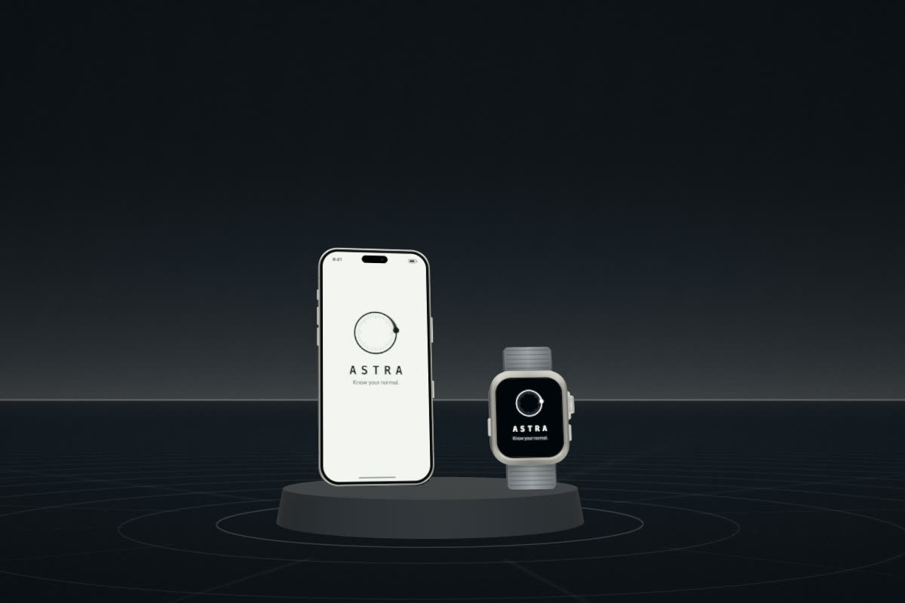
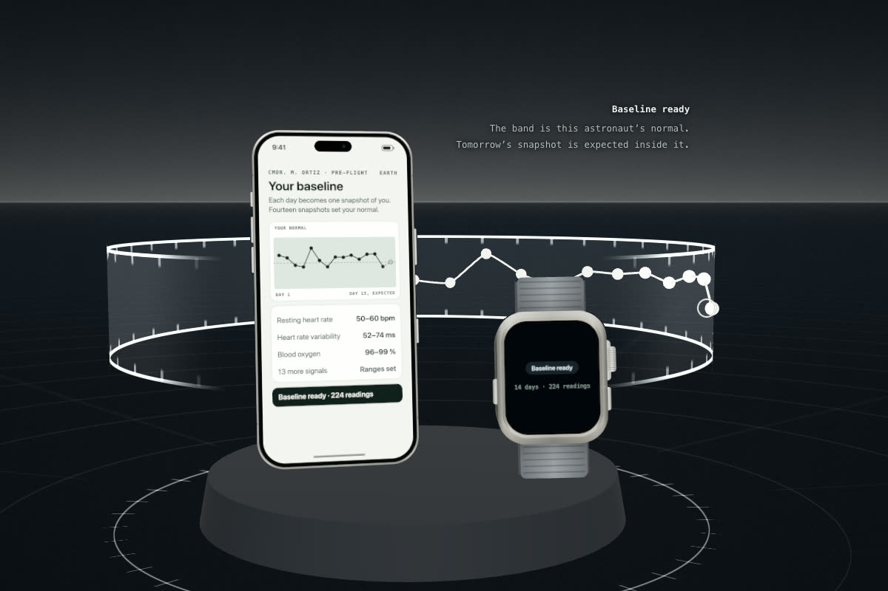
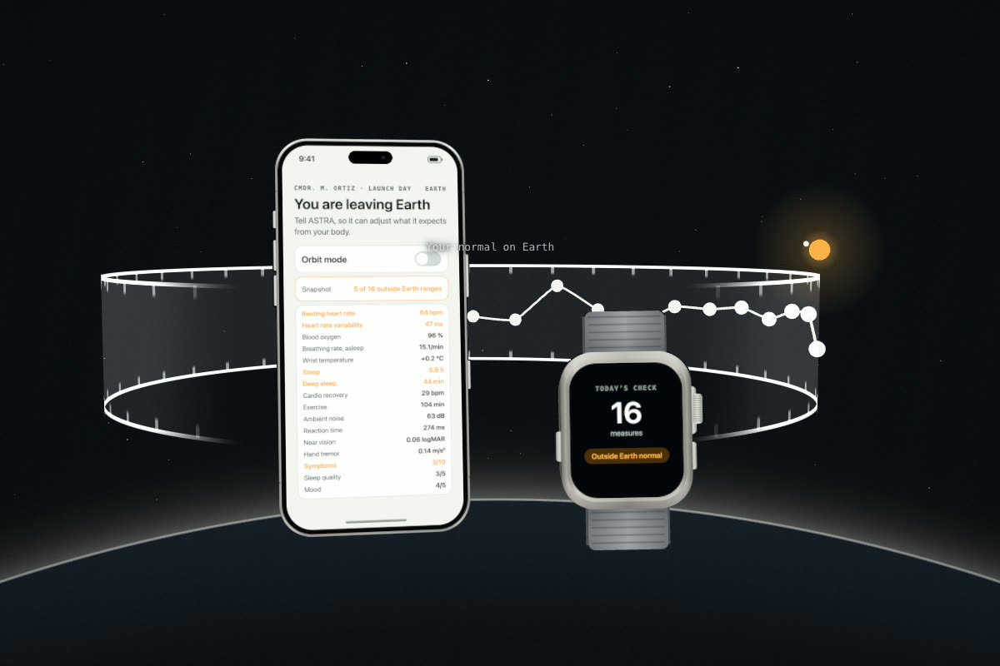
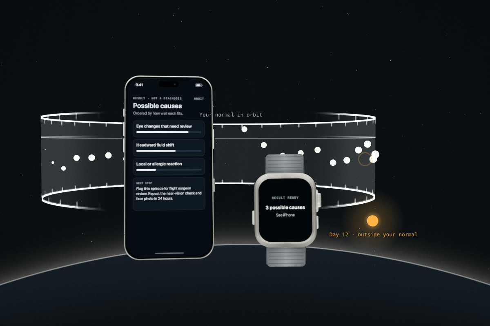
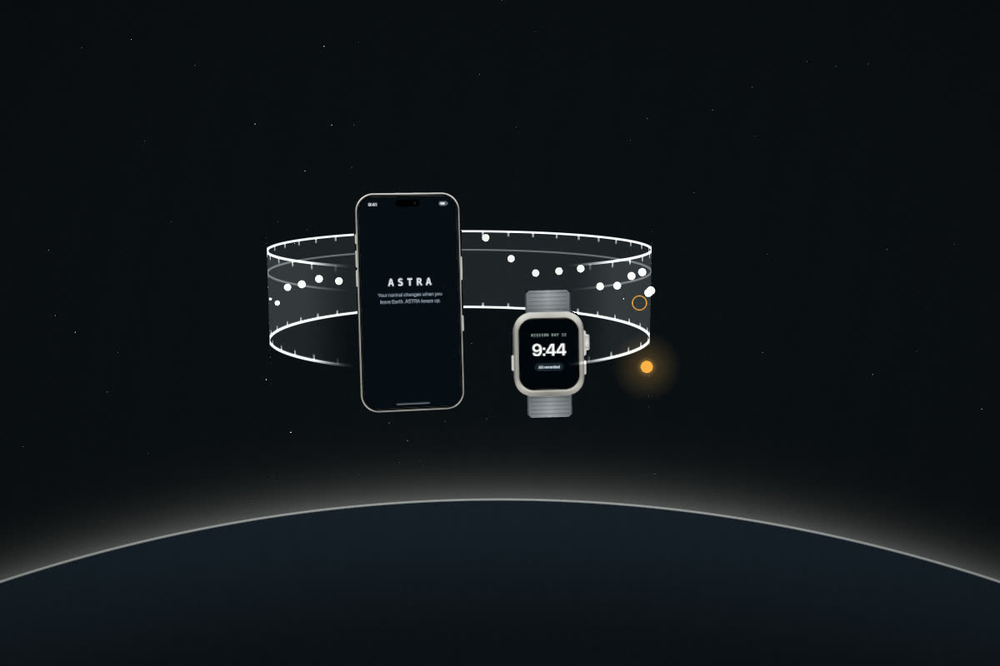

01 Distance
The fartherthe mission,the fartherthe doctor.
A value that is fine on the ground can mean something else in orbit. A watch shows a number. It does not say what to check next, or what is missing.

02 Baseline
A baseline thattravels withthe astronaut.
Every daily check records 16 measures from Apple Watch, iPhone tests and three questions. Together they make one snapshot of the astronaut that day. Fourteen snapshots draw a baseline that belongs to this astronaut, not to an average person.

- Phone: “Daily check n of 14”. Sixteen measures fill in one by one: resting heart rate, heart rate variability, blood oxygen, breathing rate, wrist temperature, sleep, deep sleep, cardio recovery, exercise, ambient noise, reaction time, near vision, hand tremor, symptoms, sleep quality and mood. After 14 days the screen changes to “Your baseline”: one snapshot per day, one line, a band for “your normal” and where day 15 is expected. Each signal also keeps its own range, for example resting heart rate 50–60 bpm.
- Watch: “Day n of 14” with the measure just taken, then “Baseline ready, 14 days, 224 readings”.
03 Orbit
Your normalchanges when youleave Earth.
On the Inspiration4 mission, crew wearing Apple Watch showed heart rate and heart rate variability that changed across mission phases, differently for each person. So the first snapshot in orbit lands outside the Earth baseline. Orbit mode moves the expected ranges, and ASTRA keeps watching.

- Phone: “You are leaving Earth”. The first check in orbit lists the 16 measures; five sit outside their Earth ranges, among them resting heart rate at 64 bpm and sleep at 5.9 hours. When Orbit mode turns on, the ranges move and the list reads “16 of 16 inside orbit ranges”.
- Watch: “Today's check, 16 measures, outside Earth normal”, then “inside orbit normal”. The readings themselves do not change.
04 Evidence
Eleven quiet days.Then somethingdrifts.
On mission day 12 the snapshot falls outside the astronaut's orbit normal. ASTRA shows which measures moved it, she says what she feels, and it ranks possible causes with evidence for each. Never a diagnosis. The episode stays open until reviewed.

- Phone: “Mission day 12, Today. Snapshot outside your normal”. The 16 measures are listed; two are marked: heart rate variability at 41 ms and sleep at 5.7 hours. Then “Result, not a diagnosis. Possible causes”: eye changes that need review, headward fluid shift, local or allergic reaction. Next step: flag this episode for flight surgeon review and repeat the checks in 24 hours.
- Watch: “Check in, snapshot outside your normal, 2 of 16 measures”, then “Result ready, 3 possible causes”, then “Reminder set, 08:00 tomorrow, repeat check”.
05 Mission
From a feelingto a plan.
A personal baseline, a range that follows the astronaut into orbit, a guided check, possible causes with evidence, and a follow-up that stays open until it is reviewed. On iPhone and Apple Watch, with no link to Earth required.
Launch the demo